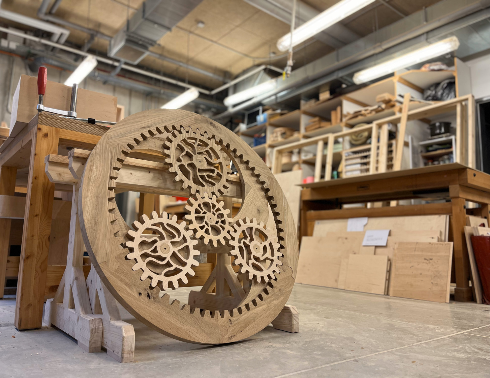

Żywy las - Activatable sculpture
[ Back ] [ E-mail Me ]



×
❮
❯
Description
The basis of my project is the metaphor of the dynamics and life of a forest, where every element is in motion, creating a living system. In this system, each gear represents a separate life, and their interaction symbolizes the integrity of the forest.
The project represents a planetary gear system: four inner gears and one outer gear. The rotation of any gear causes the others to move. My goal was to create an organic design for the gears, moving away from the classic mechanical look and emphasizing the connection between the form and concept of the project.